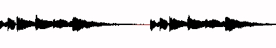
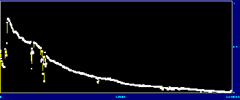
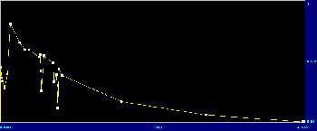
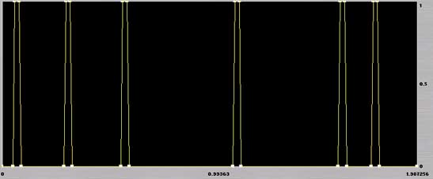

|
|
NEXT: SPECTRALSoundfile functions operate in the time domain, that is, they alter the sound waveform, which is a representation of sound as amplitude against time:

Other time-domain processes which are concerned with mixing, spatialisation and editing are catalogued separately here – see EDIT/MIX FUNCTIONS.
SOUNDFILE PROCESSING CATEGORIES:
- ENVELOPE (Main CDP reference: ENVEL and ENVNU)
- FILTER (Main CDP reference: FILTER)
- PITCH (Main CDP reference: MODIFY)
- REVERB/DELAY (Main CDP reference: REVERB and MODIFY)
- EXTEND/SEGMENT (Main CDP reference: EXTEND and MODIFY)
- RE-ORDER (Main CDP reference: EXTEND)
- GRANULAR (CDP reference: MODIFY and GRAIN)
- PITCH-SYNC GRAINS (CDP reference: PSOW)
- TEXTURE (CDP reference: TEXTURE)
- RETIME (CDP reference: SFEDIT RETIME)
- WAVESETS (CDP reference: DISTORT)
ENVELOPE (CDP groups: ENVEL and ENVNU)
The 'envelope' is the overall loudness contour of a sound: in CDP, it is the the actual time-varying level, rather than a simple percentage gain control. You can extract an envelope (either as a binary or breakpoint* text file) and edit it visually or transform it in over 30 different ways. Envelope functions alter the dynamic shape, creating fades and swells, warping the envelope in many ways, or totally re-drawing it, creating new envelopes, and imposing or replacing the envelope of one sound with that of another. The transformed data can also be applied to scores of time-varying parameters throughout the CDP system.
Most envelope functions use a parameter called window-size. This is the time-period used to measure the amplitude successively and it determines how accurately the envelope is defined: a small window-size gives a precisely defined envelope; with a larger one, amplitude values are averaged over a longer time.
*Breakpoint text files are lists of time value pairs. Envelope values use a scale of 0 (silence) to 1 (full gain).
CREATE / EXTRACT / CONVERT
- Create creates a binary envelope file (.evl) or a breakpoint envelope file (.brk or .env). In Soundshaper, the latter can be edited in the Graph-Edit page, or created from scratch.
Binary envelope files (.evl) are presumably more accurate than text breakpoint ones, but the latter are more editable.
- Cyclic creates an envelope file of a cyclic nature (e.g. for Envel Replace or Tremolo). Any user-defined envelope shape can be used for the cyclic "cell".
- Extract extracts the envelope from a soundfile, either as a binary envelope file (.evl) or a breakpoint file of time amp values [0-1] (.brk or .env). Soundshaper can extract the envelope automatically, using current default settings. CDP's BrkEdit editor also has a data-reduction facility.
Analenv is a spectral equivalent which extracts the binary envelope from a spectral analysis file.

Detailed envelope breakpoint file.
Data-reduced envelope breakpoint file. (The broken yellow lines are a product of image reduction.)
- Peakchop isolates peaks in the soundfile and either outputs the enveloped sound or produces an envelope file based around the peaks. A typical output from a drum sound:

- EnvToBrk/BrkToEnv: EnvToBrk converts a binary envelope file (.evl) to breakpoint (.brk or .env). Data-reduction may then be applied using BrkEdit, if required. BrkToEnv
converts the other way.
Breakpoint files may be expressed in amplitude values from 0 to 1 or in dB. (See also ENVTODB, DBTOENV.)- dBToGain/GainTodB: two utilities converting between amplitude values (0-1) and decibel values (<0) in textfiles. These could be useful to convert an extracted envelope to time-varying dB values as required, or vice-versa.
ENVELOPE PROCESSES
- Impose superimposes the envelope of one sound onto another. Imposing an envelope is akin to a traditional envelope-follower, which takes an audio input and converts it into a control voltage that may be applied to another sound. A variant Scaled timescales the imposed envelope first to match the length of the target sound.
- Replace replaces the envelope of one sound with that of another.
- Dovetail/Curtail/ExpDecay: Dovetail applies fade-in and/or out to a sound, which is useful prior to mixing. Curtail creates a fade-out, similar to Dovetail but with wider choices, e.g. a gradual or steeper decay slope. ExpDecay complements Dovetail and Curtail by offering a simple exponential fade-out with a defined start and end time.
- Attack: emphasises the amplitude at a particular point, which need not be at the start of the sound.
- Swell/Spike (R8): Swell creates a rising and falling envelope shape, peaking at any specified point in the file – it may or may not be an existing peak – and the swell shape is pre-defined, with either a linear (steeper) or exponential (more gradual) shape. Spike is a newer variant of the idea, in which a list of times (possibly representing pre-analysed peaks and troughs) can be employed.
- Pluck is an early version of Spike (similar to Attack), though perhaps less successful.
- Tremolo/Shudder/Pulsed: three similar functions, each producing a cyclic amplitude variation. Tremolo (revised in Release 7 from the earlier Envel Tremolo) uses a built-in Low-Frequency Oscillator (LFO), set in the traditional manner by size (depth) and rate (frequency). Release 7 added a width parameter. Shudder allows for random variation of the oscillation. Pulsed offers the greatest control: breakpoint files set an an envelope shape for the impulse and any pitch transposition within it; you set the start and end times of the effect, and can randomise the pitch, onset-time and amplitude from impulse to impulse.
- Tremenv (R8) offers a tremolo with width narrowed after the peak, possibly too subtle for many sources.
- Flutter produces a tremolo effect across multi-channel space: on each cycle, different output channels fluctuate in loudness so that the tremolo effect moves rapidly from one set of channels to another.
- Warp/Reshape/Replot are three versions of a 15-function suite for use with soundfiles (Warp), envelope files (Reshape) or breakpoint files (Replot). These functions directly alter the envelope shape: attenuate, exaggerate, flatten, lift, normalise, reverse, timestretch, ceiling (raise whole envelope to max.), corrugate (tightens envelope peaks by reducing troughs to zero), ducked, expand, gate, inverse, limit, trigger (create sudden on-bursts triggered by rise-rate).
- Flatten (R8) equalises the level of sound elements. It is a newer version of Warp/Flatten (though whether it offers anything more remains to be seen).
FILTER (CDP group: FILTER)
Filtering changes the tone-colour of a sound, removing some of the harmonics and emphasizing others. The filter's power is well known through the classic "subtractive synthesis" model in which a synthesised waveform, rich in harmonics, is shaped by a time-varying filter. The classic filter types are:
- Low-pass: cut off top frequencies
- High-pass: cut off bottom frequencies
- Band-pass: a mixture of Low and High which preserves a frequency band; and hence Notch, in which a band is rejected
- All-pass: all frequencies are let through but with changed phase relationships
CDP has all the classic types plus particularly effective filter banks (c.f. Graphic EQ), which can be used to "tune" the sound by strongly emphasising certain frequencies over others. There are also very effective spectrally based filters (see Spectral Processes).
GENERAL FILTERS
- Fixed implements the standard filter types: High-Pass, Low-Pass and Band-Pass, using a single fixed frequency (not time-variable) to determine the cutoff point for High/Low pass and the centre frequency of the band in Band-Pass mode. The sharpness of the amplitude roll-off ('Q') is also fixed.
- LoHi is a simple Low/High-pass filter, which is capable of very tight 'brickwall' filtering. Given a cutoff frequency (where filtering begins) and a stopband (the frequency of full attenuation) the program computes and applies the necessary order of filtering to achieve this.
- Variable has standard High-pass/Low-pass/Band-pass/Band-reject modes, with time-variable cutoff frequency and Q (sharpness of the pass band).
- Phasing: the classic "phasing" effect is a product of wave-cancellation, as a waveform with time-varying delay is mixed with the original and different frequencies become prominent or drop out in turn.
- Phasor (R8) is a newer and more effective phasing function in which a number of output streams phase-interact.
- Sweeping: an oscillator sweeps across the frequency spectrum, and with a tight filter band the sweeping filter picks out the component partials in a sound in turn. This version has High, Low, Bandpass/Band-reject modes and time-varying Q to emphasise the effect.
- Iterated is a filterbank with echo (c.f. Iterate), which may alternatively be seen as iteration with added filtering.
FILTER BANKS
- Bank implements a filter bank (i.e. bank of band-pass filters, or Graphic EQ). The centre frequencies of the bands are based on harmonics, subharmonics, harmonics plus offset, or equal intervals; or they can be set randomly. The bandwidth (Q: higher Q =narrower band) is time-variable; if Q is set high, you can easily focus on a 'tuned' sound.
- Userbank: a filter bank in which the bands are defined by pairs of frequency/MIDI-pitch and amplitude. The bandwidth ('Q') is time-variable, but freq/pitch and ampltude are fixed. The frequencies and amplitudes can be set in Soundshaper's Graph-Edit, which has a number of presets for the purpose.
- Varibank/2: is a versatile tool for 'tuning' a sound to a given chord. Sets of filter frequencies/MIDI-pitches and amplitudes can change over specified time-periods. A number of harmonics of the central frequency can be included as extra filters and the bandwidth is also time-variable. In Varibank 2 (Partials), the partials (possibly inharmonic) and their amplitudes can be specified, also time-varying.
- Bankfrqs, VFilters and Filtrage are three functions that generate filter data files for Bank and Varibank; Filtrage produces randomised frequencies within user-limits.
PITCH (CDP group: MODIFY)
Most processes here change the speed of the sound, which also changes its pitch (and time). Quite different are the two modulation processes RingMod and CrossMod, which can radically change the frequency content. Even more radical transformation is possible in the spectral domain (see Spectral Processes) and in the functions which process pitch extracted from spectral files (see Pitch Processes).
- Speed transposes the pitch by changing the speed of playback: a faster speed raises the pitch and shortens the duration, while a slower speed lowers the pitch and lengthens the duration. Transposition is by number of semitones or by ratio and both are time-variable.
- Accel (modify speed 5) changes speed by accelerating (raising pitch) or decelerating (lowering pitch).
To change the time without altering the pitch, use a time-varying Timestretch (a spectral function).
- Vibrato (modify speed 6) raises and lowers (modulates) the speed under the control of a low-frequency oscillation, using the classic controls of modulation rate (frequency), and width of transposition. Both are time-variable.
- STRANS: the multi-channel equivalent of the above Speed functions.
- Verges (R8) introduces a brief glissando up or down at the times specified.
- Stack superimposes transposed copies of the sound to make a chord. Transpositions are by speed, so vary in length, but you can stop the process early and there is an optional off-set to help synchronise attacks.
- Ringmod (modify radical 5): ring-modulation is a classic effect in which all frequencies in a sound are multiplied by a modulating frequency, usually producing a metallic effect in which the timbre varies as the original sound's pitch changes.
- Crossmod (modify radical 6) modulates one sound with another (which can be itself). Each frequency component of File2 modulates each of those in File1, resulting in a complex mix.
REVERB / DELAY (CDP groups: REVERB, MODIFY, EXTEND)
In this category, the whole sound is repeated (except for SHRINK), with possible overlap.
Reverberation consists of short-delayed echoes within an enclosed space. Reverb and Roomverb implement classic reverberation algorithms, while convolution uses impulse files or soundfiles to mimic any acoustic space.
Delay lines similarly produce echoes and CDP has a wide range of functions covering every aspect of delay and echo.
- Reverb / Roomverb / Roomresp: Reverb and Roomverb are comprehensive reverberation functions, incorporating such features as reverberation time, dry/wet mix, absorption (high-frequency damping) and early reflections: the programs use built-in sets for small, medium and large rooms, but these can be optionally entered in a datafile created by the separate Roomresp program. There is also optional filtering, optional pre-delay (which time-shifts the early reflections to give the effect of a bigger room), and multi-channel output.
- Fastconv is an FFT-based convolver. Its primary application is convolution-based reverberation, using a sampled impulse response of a building or other responsive space. (Many suitable impulse-response files are available on the Internet.) More experimentally, the impulse-response input can be any soundfile. Convolution can also implement an FIR linear-phase filter. Fastconv supersedes an earlier function Convolve, which is very slow.
- Delay (modify revecho 1/2) implements a classic delay line, with fixed and variable delay times. The delayed sound can be fed back and mixed with the original to give a series of echoes or (if short enough) a pitched resonance. The delay time can be varied by a low-frequency oscillator (LFO), with its own controls for speed and depth of change.
- Newdelay sets the delay time by a pseudo-MIDI pitch, corresponding to the resonant pitch that occurs in a delay line with mutiple feedback.
- Stadium-Echo (modify revecho 3) produces stereo echoes with a specified delay time and number of echoes, within a given degree of roll-off (amplitude decay). The function can be very useful for creating a fake stereo signal (or chorus effect) from a mono signal, with tiny delays being scattered randomly in stereo space, as they might be in a hall.
- Mchanrev is a variant of Stadium-Echo in which mono or stereo input is echoed across multi-channel space.
- Iterate produces multiple repetitions, with the options of randomizing the delay time and varying pitch and amplitude on each repeat. You can choose either an outfile length, or an exact number of repeats.
- MchIter is identical to Iterate, but scatters output across multi-channel space.
- Iterline is a variant of Iterate, in which the repetitions follow a "transposition line" of time-transposition pairs
- Freeze is a variant of Iterate, repeating a segment (or the whole sound) to produce a freezing or chorus effect. The delay time between repeats and the pitch of the iterations can be randomised; both of these are required for a chorus effect.
- Repetitions repeats the whole sound at the times specified in a datafile; the playings overlap if the next start time occurs before the end of a previous playing. For short sounds (e.g. percussion), this process is a quick way of repeating the sound with a precisely timed rhythm.
- Tapdelay is a delay line with user-selected delay times (taps). In a standard delay line the ouput is taken at the end, whereas in a tapped delay line, extra outputs are also taken at intermediate points.
- Echo (sfecho echo) repeats the whole sound without any overlap: the delay-time is variable, but never shorter than the original length (which would give overlap)
- Bounce (R8) repeats the whole sound with repetitions accelerating and decaying in level, mimicking a bouncing ball.
- Shrink repeats a sound, shortening it on each repetition and contracting the gaps between repetitions.
A multi-output option (shrink 5/6) shrinks around found or given peaks.
- Madrid (multichannel repeats) repeats one or more sounds and outputs these to multi-channel space. Internally, the function produces several spatially distinct sound streams, each of which has the same time-delay and order of sounds. Some repetitions are then randomly deleted to give a sense of spatial syncopation.
- Ceracu (polyrhythms) repeats sounds at different times in different channels, creating musical polyrhythms such as 2 against 3. Very complex polyrhythms can easily be created (e.g. 11:13:17).
- Shifter sets up a number of polyrhythmic streams like Ceracu, but the repetition-times shift so that the streams will re-synchronise after a specified number of cycles.
- Tesselate (R8) repeats multiple sounds with staggered start-times and projects these across stereo or multi-channel space, the repeated pattern shifting in space and time.
EXTEND / SEGMENT (CDP groups: EXTEND, MODIFY, MULTICHAN, GRAIN)
Segmenting and restructuring sounds is a strong feature of CDP. In this category, sounds are extended mainly by repeating segments.
Loop is particularly important as an introduction to further segmentation and granular processes.
- Reverse (modify radical 1) reverses the soundfile so that it plays backwards. (This can be used in conjunction with other reversing procedures, like Grev 1 (reverses grains), Distort Reverse (reverses pseudo-wavecycles) or Envel Warp 2 (reverses envelope).
- BaktoBak splices a reversed copy of the soundfile on to and before the original. For many sounds this will give a peak in the middle, unless they have been reversed first.
- Zigzag plays portions of the soundfile alternately forwards and backwards. Zigzag is a good way of extending a sound (especially a percussive one). Short forwards and backwards movements create a stuttering or repeated note effect.
- MchZig is a multi-channel version of Zigzag: output is sent to a new channel at each 'zig' or 'zag'.
MchZig is one of a number of multi-channel functions in which the signal is partitioned into channel-streams. The partitions themselves may have musical uses outside multi-channel space if the channels are then split. (Others include MchIter, MchShred, Wrappage, Texmchan and Mchanrev.)
- Hover is like Zigzag, but hovers around a given location at a given modulation frequency – both can be randomly varied. The width of the segment read is set by the frequency. The location point is time-variable, so the pointer can move through the file over time or move to any time-point.
- Hover2 (R8) – as Hover, but after each reading back and forth from a zero-crossing, it outputs the same data inverted, to form symmetrical zero-centred waveforms at each read. Each segment is in effect followed by a reversed copy of itself.
- Scrub (modify radical 3) attempts to simulate the sound of tape moved back and forth across a tape-head, producing wild glissando efffects.
- DVDWind (R8) shrinks a sound by skipping segments, somewhat like the fast-forward button on a CD player. The clip length to be played before each skipping is set by the user. Time-stretching followed by DVDWind shrinkage can produce an interesting transformation.
- Noise-extend extends the noise portion of a sound by a given amount.
- Loop: a segment of the sound is looped round and round, either a set number of times or enough to create a sound of a required length. The segments do not overlap but are laid end-to-end. A key optional parameter is STEP, which moves the loop start-point forward through the sound. If the segment is small (within 100 ms) and the step-time is also short (<20 ms), the result is a simple form of time-stretching. The step-time creates a resonance at the frequency of the delay, but this can be varied to create a less focussed resonance.
- Doublets provides a simple kind of repetition, dividing the sound into segments and repeating each a given number of times, in turn (e.g. AAABBBCCC). If the segment length is small enough, the process provides a simple form of time-stretching.
- Repeater (R8) repeats segments defined in a file of start and end times, number-of-repeats and the delay between them.
- Envspeak (R8) repeats, reverses or attenuates segments found by envelope or a list of times, with options to shrink or shorten the sound. Segment groups can also be reversed or re-ordered randomly.
- Pulser/Multi (R8) repeats short enveloped segments as pulses. These may be pitched, taken from the source start or randomly selected and the pulse speed is time-variable. Pulser Multi uses more than one source sound.
- Motor (R8) creates a fast (inner) pulse-stream of enveloped segments, within a slower (outer) one. There can be more than one input. The relationship between the inner (freq) parameter and the outer (pulse) is quite complex and likely to generate an error message if not appropriate.
- Splinter (R8) produces a series of pulsed segments shrinking in time either towards or away from a target time in the source, with optional pitch change on each pulse.
- Cascade (R8) echoes segments of the source sound in the background, with spatialising options.
- Fracture cuts enveloped segments and disperses these in multi-channel space.
- Crumble (R8) projects a mono source over 8 or 16 channels, with possible time-stretch and pitch variation, then segments it and distributes the segments over progressively smaller numbers of channels. The order of segments and their time-positions are retained: each channel has same length, with silences between segments.
- Rotor (R8) aims to read the soundfile at different speeds to create a stream of pitched events, which are permutated, the generated note-sets growing and shrinking in pitch-range, speed and spatial width. However, in tests, ROTOR appeared to generate a shimmering type of noise, potentially restricted to a limited pitch range. Some sources and parameter settings produced a series of pulsed noises.
- Brownian (R8) generates a texture of sampled elements in pitch and multichannel space, following Brownian motion. The soundfile is read at different speeds to generate output events.
- Crystal (R8) [untested] aims to generate N sound-events based on the position of N vertices of a crystal, then rotate the crystal in 3-D space and generate another group of N events, etc. Either one soundfile is multiply-read, with delay, to generate events, or N infiles generate different events for N vertices.
RE-ORDER (CDP group: EXTEND)
In this category, the sound is chopped up and the segments re-ordered, often randomly. The result is usually a garbled jumble of sound fragments.
- Drunk takes a 'drunken walk' through the soundfile, reading segments and splicing them together. Segments are read forwards and begin from within a range ('ambitus') around a given start-time ('locus'), which remains static or can move through the soundfile. Once a segment is read, the program moves randomly to a new position in either direction, within the range, from where it reads the next segment. The segment size is determined by a clock rate, a slower clock producing longer segments.
- Shred randomly cuts and splices repeatedly, within the existing file-length. The sound is cut into random segments, but retains its original duration. The segments are re-ordered by a permutation process, which is repeated so that the sound gets more and more jumbled, literally 'reducing it to shreds'.
- MchShred is a multi-channel version of Shred, with the segments scattered across the available output channels.
- Extend Scramble: like Drunk, segments are chosen at random and joined end-to-end. Segments are selected from a wide variety of locations in the soundfile, jumping back and forth a great deal, hence "scrambling" the sound. The size of the segments is chosen randomly within user-set limits.
- Scramble (R8): here the segment size is a number of wavesets (pseudo-cycles), whose order is scrambled randomly or by size and level. Segments can optionally be transposed or attenuated.
- Sorter (R8): the chopped elements are sorted by loudness or duration
- Stutter (R8) randomly repeats segments cut from a list of times, with optional transposition and attenuation and possible intervening silence.
The process can be used to extend a sustained sound by playing random portions of it.GRANULAR (CDP groups: GRAIN and MODIFY)
So-called Granular Synthesis is now a common feature of many sound-processing programs. In CDP, the main program is called Brassage (the French term for the technique). This extends the principles in Loop to create either thickly textured sounds out of overlaid segments, or separately segmented sounds.
The other Grain functions manipulate the grains in 'grainy' sounds – i.e. sounds with silences separating the segments/grains. Grains can be treated in many ways, e.g. duplicated, omitted, repitched, reversed in order.
- Brassage/ Sausage is similar to the delay functions, especially Loop. The soundfile is segmented and the repeated segments (grains) can overlap in time, giving thick textures. You can also timestretch/shrink the sound and change the pitch. In Sausage, the process cycles round several input soundfiles.
- Wrappage (Soundshaper: MchGrain) is a multi-channel version, in which the output is distributed over a given number of channels.
- Granulate (modify brassage 5) produces inter-grain silences, to create 'grainy' sounds for processing in the Grain functions (below).
- Newtex is a variant of Brassage with aspects of Drunk, creating a time-varying texture in multi-channel space with segments cut from a source sound or sounds.
GRAIN FUNCTIONS
These functions manipulate the grains in "grainy" sounds – those with inter-grain silences. Any sound with gaps of minimum 32 msecs can be regarded as a 'grainy' sound. Apart from Granulate (brassage 5), Gate, SpecGate or Envel Warp 8 (Gate) can produce inter-grain silences, and Masks and Manysil can also create silent gaps.
- Grev: a number of functions manipulating grains found automatically by envelope troughs and zero-crossings. Several of the functions below are included as modes: Reverse, Repeat, Delete, Omit, Timestretch, and Put-grains (= reposition).
In many ways this is a more successful program than the individual grain functions, which require information about grains in a sound.
- Assess, Find, Count and Grev 6 (grain times) provide information about grains in a sound and suitable settings for grain-function parameters.
- Align attempts to align grains in two soundfiles.
- Duplicate duplicates the grains found in a grainy sound, repeating each the specified number of times, in turn.
- Repitch transposes the pitch of grains.
- Rerhythm changes the duration of grains.
- Remotif changes the pitch and duration of grains.
- Reorder shuffles the order of grains, using a text shuffle code.
- Reverse reverses the order of grains without reversing the grains themselves.
- Reposition changes the grain onset times to those in a datafile.
- Omit keeps a specified number of grains out of a set, eg. 3 out of every 5.
- Timewarp timestretches or shrinks the sound by expanding or shrinking the gaps between grains.
- Grainex extends an area containing grains (such as a rolling "r" sound), the start and end search times being set by the user. The grains are found by envelope troughs and zero-crossings.
- R_Extend attempts to timestretch a rolled "r" in speech.
PITCH-SYNCHRONOUS GRAINS (CDP group: PSOW)
PSOW is a set of experimental grain processes for vocal sounds (only), allowing manipulation of formants independently of pitch, often with unexpected results. It attempts to segment the sound according to grains it finds that might correspond to FOFs, and then process these grains. FOFs (from the French 'Forme d'Onde Formantique'), are formant waveforms – grains – used to synthesise the singing voice.
- Ptobrk extracts a pitch breakpoint datafile in a form suitable for PSOW functions.
All PSOW processes require this pitch-trace from a spectral analysis file. (In Soundshaper this is handled automatically behind the scenes.)
- Locate finds the start of the pitch-synchronous grain nearest to the specified time.
- Cut at Grain cuts the file at a specified pitch-synchronized grain.
- Grab grabs a pitch-synchronized grain or segment (optionally repeating it). The function is used to extract two grains to be interpolated by Interp.
- Chop extracts separate files, based on pitch-synchronised grains.
- Stretch timestretches/shrinks a sound by repositioning the pitch-synchronized grains. The grains themselves are not time-stretched. The process time-stretches the sound and changes the pitch (like SPEED) but preserves the vowel formants.
- StrTrans (stretch-transposition) is similar to Stretch: the process timestretches a sound, without changing vowels. Each FOF is individually repeated. The pitch can also be independently transposed without changing the vowels.
- Dupl timestretches by repeating the (groups of) grains in a segment, a low number of grains in each segment giving a smoother result.
- Delete timeshrinks a vocal sound by deleting pitch-synchronized grains, retaining one in so-many out of a specified segment length.
- Features imposes a selection of features on pitch-synchronized grains in a vocal sound, or modifies the grains themselves. Among the options are: transposition, which does not change the timeframe of the sound but may introduce octaviation or other double-pitch features; transposing the spectrum above the fundamental (which itself doesn't change); a HOARSENESS parameter; generating subharmonics of the fundamental; and stretching the grains, but not the sound itself.
- Sustain freezes & sustains a (vocal) sound on a specified pitch-synchronized grain. Either a single grain, or a segment of multiple grains, is expanded.
- Sustain2 is a variant of Sustain; here the user gives the start and end times for the chunk to be frozen. Longer durations may produce clearly repeated chunks, e.g. groups of words.
- Reinforce attempts to reinforce partials in a (vocal) sound by overlaying pitch-synchronized grains that are harmonics or inharmonic partials of the fundamental pitch. There is also the option of sustaining partials.
- Space splits alternate pitch-synchronized grains into separate sound-streams, and distributes these spatially. For two streams, each at half the original pitch, the pitch drops by an octave, yet the output sound is not longer. A SUBHARMONIC parameter drops the pitch further, dividing the frequency by 3,4,5,etc.
- Split splits vocal pitch-synchronized grains into subharmonic and upwardly transposed pitch. The pitch is transposed up without changing the timeframe or the vowels; the process also adds a subharmonic frequency, and there is a balance control between these two.
- Impose attempts to impose pitch-synchronized grains from one soundfile onto another.
- Interleave interleaves (groups of) pitch-synchronous grains, from two soundfiles.
- Replace combines the pitch-synchronous grains (FOFs) of the first sound with the pitch of the second.
- Interp interpolates between two pitch-synchronous grains: both extracted from different files using PSOW Grab (although they can actually be from different points in the same file). The key parameter is the length of interpolation between the two grains; either the start or end grain can be sustained and vibrato and tremolo can also be added.
- Synth is an experimental program which attempts to impose a stream of pitch-synchronized grains onto a synthesized sound. The grains are taken from the input sound, while the synthesised sound can be specified using a variety of datafile formats.
- Tweet (R8) replaces FOFs in a vocal sound by synthetic tweets or noise.
OTHER FUNCTIONS (Release 8)
- FOFEX (R8) first appeared with Release 6 (2011), but has remained undocumented. It has two functions – Fofex Extract and Fofex Construct.
Fofex Extract extracts FOFs to a special FOF-file for use with Fofex Construct, or to separate soundfiles.
Fofex Construct superimposes FOFs to make an output FOF.
It remains to be seen whether these add further functionality not already in the PSOW group.TEXTURE (CDP group: TEXTURE)
The TEXTURE suite is based on algorithmic repetition and lies somewhere between a sophisticated arpeggiator and a fully-fledged algorithmic composer. TEXTURE processes repeat and transpose the input sound(s) in various ways to create a texture of events ('notes'). In this context, a 'note' is any sound, which may or may not be played to the end. The user can easily edit one or more sounds to provide segmented events for the processes, and CDP has several functions to generate sound 'packets' (very short enveloped sounds) which may also be useful as input.
'Notes' can be treated as simple repetitions, or repeated in groups, or with a timed rhythm, or as transposed ornaments or fully-defined motifs (timed and transposed). Key parameter values such as pitch, duration, gain (level), spatialisation and sound number are generally chosen randomly from within a specified time-variable range (which can also be a fixed value).
In each of the eight main functions, repetitions can be pitched at random within the defined pitch range, or restricted to a user-defined pitch-set or 'harmonic-field' (which octave-transposes the pitches); the set/field can be time-varying. More than one input sound can optionally be used, and the range of sounds chosen can be time-varied.
It is not easy to grasp the differences between the Texture programs, and the suite is best explored at first using a simple note sample or similar short sound. CDP supplies two sets of tutorial examples for this purpose.
- Simple: single 'note' events are repeated at regular intervals. Loudness, duration and pitch are selected randomly from the specified ranges, though pitch can be restricted to a pitch set/field.
- Texmchan is a variant of Simple producing multi-channel output, with parameters to set the pan-position of events in multi-channel space. The input is natively mono (though Soundshaper can handle stereo or multi-channel input).
- Grouped: 'note'-events are repeated in groups. Various parameters control the timing, pitch and durations within the group, while others control the relationship between the groups. As always, pitch can be restricted to a pitch set/field.
- Timed is a variant of Simple: 'note'-events are repeated following a given rhythmic motif, with pitches selected at random from a pitch range or a specified pitch set/field.
- Tgrouped (Timed Groups) is a variant of Grouped: events within each group are shaped as in Groups, but the onset times of each group are determined by a timed rhythmic motif (instead of by the Grouped PACKING parameter). Pitches are selected randomly from within the pitch range or can be restricted to a defined pitch set/field.
- Decorated: groups of notes decorate each pitch of a basic 'line', rather as a figure such as a turn might elaborate each note of a scale, arpeggio or other pitch sequence. The notelist 'line' is a timed motif. Pitches are chosen randomly either from the pitch range, or from a given pitch set/field, and may be placed above, below or centred on the pitch of the basic note, or combinations of these (e.g. centred and above, etc.). Predecor and Postdecor are variants - the decorations are connected to the line: centred (Decorate), before and ending on the line's note-event(Predecor), and starting precisely on the line's time points (Postdecor).
- Ornate is like Decorate, but here the ornaments are fully-defined motifs (with pitch, amplitude and duration values). The notelist 'line' is again a timed motif. As in Motifs, the total duration (tempo) of the ornament motif can be scaled up or down. PreOrnate and PostOrnate are variants – the ornaments are connected to the line: centred (Ornate), before and ending on the line's note-event (PreOrnate), and starting precisely on the line's time points (PostOrnate).
- Motifs uses a fully-defined motif, with pitch, amplitude and duration values (somewhat like a figure in a Baroque sequence). The starting pitch of the motif-group is chosen randomly from within the pitch range, or from the defined pitch set/field, and the other notes of the motif are transposed exactly. The total duration (tempo) of the motif can be scaled up or down.
- Motifsin (Harmonic Motifs) is a variant of Motifs: all output notes are constrained by the defined pitch set/field. If a pitch in a transposedmotif is not in the pitch set/field, it is changed to the nearest member of the set/field.
- TMotifs (Timed Motifs): fully defined motifs (with pitch, amplitude and duration values) begin at the times specified in a timed rhythm. The rhythm controls the onsets of the motif-groups, as in TGroups. The starting pitch of each motif-group is chosen randomly within an overall range, or is restricted to the pitches specified in the pitch set/field.
- TMotifsin (Timed Harmonic Motifs) is a variant of TMotifs and Harmonic Motifs (motifsin): all output notes are constrained by the defined pitch set/field. If a pitch in a transposed motif is not in the pitch set/field, it is changed to the nearest member of the set/field. TMotifs and TMotifsin are the most defined and least randomized of the Texture functions.
RETIME (CDP group: SFEDIT)
The SFEDIT RETIME program deals with the retiming of amplitude peaks or silence-separated events. As a producer of experimental retimings of events, it has potential, but is less successful at emulating commercial "beat-slicing" functions. There are three divisions: functions that create or retime silences, those that retime amplitude peaks, and those that retime silence-separated events. Not all of the relevant functions are within RETIME itself.
SILENCES
- Manysil (also in Edit/Mix page) inserts silences at given times. Suitable times can be obtained from the Info function GatedOnsets (housekeep extract 6).
- Gate, Housekeep Gate or Envel Warp 8 (Gate) remove low-level signal from a sound, producing silences.
- Corrugate (envel warp 11) sets amplitude troughs to zero.
- Masks (sfedit masks) over-writes portions of a sound with silence; start and end times of each portion are specified in a textfile.
- Modify Brassage 5 (Granulate) also creates silences, but not in relation to the changing level, like Gate.
- Peakchop (mode 2) isolates peaks in the soundfile and outputs an envelope based around these peaks. The envelope can then be applied to the original sound using Envel Replace or Envel Impose.
- Constrict shortens zero-level sections in a sound. The only parameter sets the amount of constriction, where a higher value shortens the silences more.
RETIME PEAKS
- PeakFind (INFO function) reports the times of peaks it finds in a soundfile; the key parameter is THRESHOLD, the level below which peaks are ignored in any time-window. The report is to a textfile (e.g. peaktimes.txt) which can be used in some RETIME processes.
- Peak Pulse (retime 1) retimes events at regular times, based on tempo or beat-duration. The peaks are taken from a peaktimes datafile, as output by PeakFind.
- Peak Retime (retime 2) retimes events, designated in a peaktimes file, to new times. To construct the appropriate datafile, a second column is added to the peaktimes list, giving the new time for the peak. Tempo is also adjustable.
- Peak Move (retime 13/14) adjusts the sound in relation to a single peak, specified by the user, to a new position to which the peak is moved by inserting or deleting silence at the start.
- Peakchop (mode 1) gates the sound around peaks and plays it at a specified tempo.
RETIME EVENTS
- Shorten (retime 3) shortens event lengths in a soundfile containing silences. The user specifies a minumum event duration in the Infile, shorter events being ignored, and an equivalent duration of output events.
- Pulsed (retime 4) shifts silence-separated events to regular times, according to a user-specified tempo.
- Speed (retime 5) changes the tempo of silence-separated events. The speed is time-variable.
- Times (retime 6/7) repositions silence-separated events at new specified times or at specified beats at a given tempo.
- Repeat (retime 8) repeats a single silence-separated event within a sound, the event occurring at a time specified by the user. The repeats are made at a specified tempo. The process works well provided the event is clearly preceded and followed by silence and the time is accurate: Peak-Envelope can help to find event times.
- Mask (retime 9) masks one or more silence-separated events using a pattern of 0 (silent) and 1 (sound). This function is also an easy way of separating granulated sounds into separate streams.
- Accents (retime 10) accentuates one in every N events by retaining the level of the accented events and reducing the others to a user-specified level.
WAVESETS (CDP groups: DISTORT and DISTMORE)
CDP's DISTORT suite, together with a newer set DISTMORE and other functions beginning with "DIST" (both R8), vary the grain concept in that the segments are pseudo-wavecycles (called wavesets) found at zero-crossings. These are used to produce a wide variety of distortion. The wavesets are processed by repetition, omission, replacing waveforms, adding "harmonics", and so on. Cycles can usually be processed singly or in groups. Many processes do produce distortion with small groups of cycles, because of rapid and uneven changes of waveform, but larger groups tend to produce smoother though often unpredictable results.
- Cyclecnt (INFO function) finds and count wavesets (pseudo-wavecycles) in a soundfile.
- Average averages the waveshape over a number of cycles. In a melodic passage, this averages the melody too, creating an unpredictable sequence of pitches, which could be analysed (see pitch data section) and applied to other processes.
- Multiply / Divide: cycles are duplicated so as to raise or lower the frequency by a proportion. These are not really transposition functions, though, unless the source waveform is very uniform.
- Distmore Double (R8) offers an alternative function to raise frequency.
- Fractal and Harmonic both add higher-frequency components to the sound. With Fractal, these are based on miniature copies of the waveform grafted on to itself. With Harmonic, the added waveforms are multiples of the original, using a datafile of harmonic_number amplitude pairs.
- Fractal Wave (R8) fractally distorts the soundfile by transposition, using data of time transposition pairs or time MIDIpitch pairs. It applies these either to the whole soundfile or to a single wavecycle. (There is also a spectral version: Fractal Spectrum.)
- Repeat/ Distrep 1 (R8) repeats (groups of) cycles the specified number of times, duplicating and timestretching.
- Repeat2/ Distrep 2 (R8) duplicates without timestretching.
- Replim duplicates cycles below a specified frequency limit (and timestretches).
- Interpolate repeats each cycle a given number of times and interpolates between them. Rather than being a simple time-stretching function, though, this produces a seriously "weird" output.
- Omit omits a proportion of cycles out of a specified group size and substitutes silence. A small group size lowers the pitch in a gritty way; a larger one audibly granulates the sound.
- Delete omits trhe quietest cycle in a group, or time-shrinks the sound by retaining the first or loudest in the group
- Replace: the strongest cycle in the group replaces all the others. This creates "random" melodies, even with large groups.
- Telescope: another time-shrinking procedure, retaining 1 in every group. Even a group of 2 will halve the sound in a gritty way.
- Envel imposes an envelope (which can be user-defined) on groups of cycles. With large groups (e.g. >100) this gives an audible amplitude modulation. With small groups, the modulation creates its own resonance, giving a distorted sound.
- Filter: the "filter" idea is to delete cycles whose wavelength corresponds to a frequency in the chosen band. As cycles are rarely full waveforms, the result is usually another kind of grittiness, rather than a traditional filtering effect.
- Interact has two modes: Interleave (mode 1) merges cycles from two sounds; Impose (mode 2) imposes the cycles of one sound on another. Both give distortion: interleaving a sound with iteself can produce an interesting half-speed version (without formant shift), while the imposing mode is somewhat like a vocoder, but without the subtlety.
- Overload: the top of the waveform is clipped and optionally replaced with another frequency. This adds "bite" or obvious distortion to the sound.
- Pitch: cycles are transposed randomly within a specified range – unless this is small, the effect is similar to an extreme vibrato. With a small range it introduces a randomised pitch variation, which can sometimes be very useful, and if the group size is large there is a noticeable "stepping" effect.
- Reform substitutes simple waveforms (sine, square etc.) for the pseudo-wavecycles.
- Distmark (R8) interpolates between waveset groups at marked points.
- Reverse / Distmore Segsbkwd (R8) reverses each cycle or group of cycles. Large groups give bigger reversed sections and less distortion.
The alternative DISTMORE version offers nine options for reversing listed Head and Tail segments (e.g. consonant and vowel) in a vocal or other suitable sound.
- Distmore Bright (R8) re-orders segments in order of the average zero-crossing rate
- Distshift (R8) time-shifts or swaps alternate groups of wavesets
- Shuffle (c.f. Blur Shuffle and Grain Shuffle): (groups of) cycles are shuffled, using a "domain" and "image" pattern.
- Zig-zag (distmore segzig R8) (c.f. Zigzag) zig-zags across tail segments, a specified proportion, or the whole file, optionally repeating segments.
SPECTRAL PROCESSES
The descriptions above are adapted from the Soundshaper manual and do not necessarily reflect the views of CDP.
For details of each function, always refer to the CDP Reference Documentation.
For further details about CDP see the Composers' Desktop Project website.
| NEXT PAGE: SPECTRAL PROCESSES |